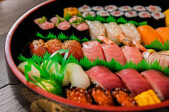
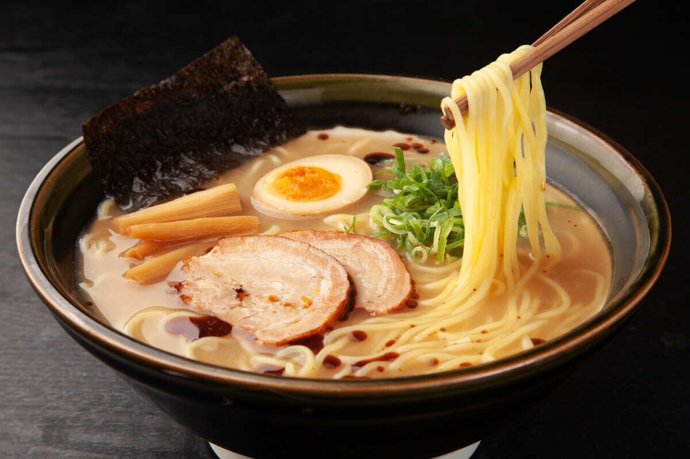
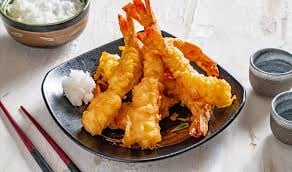
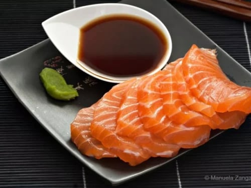
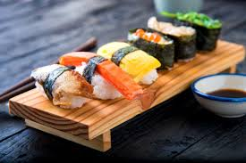
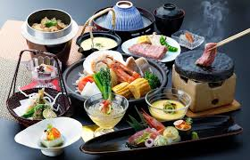
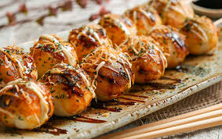

Japanese Cuisine
Japanese cuisine, known as Washoku, is a culinary art that emphasizes freshness, seasonality, and balance. From sushi to ramen, each dish tells a story of tradition, innovation, and harmony with nature.
Popular Japanese Dishes
Sushi

Sushi is a staple of Japanese cuisine, featuring vinegared rice topped with fresh fish, vegetables, or other ingredients. It's a symbol of precision and freshness.
Ramen

Ramen is a noodle soup dish originating from China but perfected in Japan. It comes in various styles like Tonkotsu, Shoyu, and Miso, each with rich broths and toppings.
Tempura

Tempura is a deep-fried dish where seafood and vegetables are lightly battered and fried to crispy perfection. It's a favorite for its delicate texture.
Sashimi

Sashimi consists of thinly sliced raw fish or seafood, served without rice. It's a testament to the purity and quality of Japanese ingredients.
Regional Specialties

Tokyo - Edomae Sushi
Tokyo's sushi scene is world-renowned, with fresh seafood from the Tsukiji Market. Try the local specialties like uni (sea urchin) and toro (fatty tuna).

Kyoto - Kaiseki
Kyoto offers kaiseki, a multi-course meal featuring seasonal ingredients. It's a culinary journey through the city's rich history and culture.

Osaka - Takoyaki
Osaka is famous for takoyaki, grilled octopus balls. Street food culture thrives here, with okonomiyaki (savory pancakes) also being a must-try.